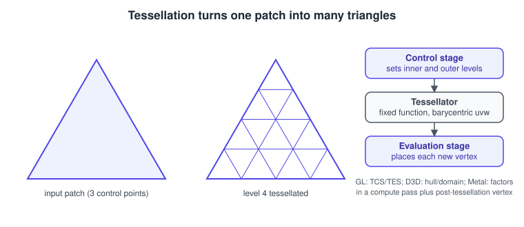
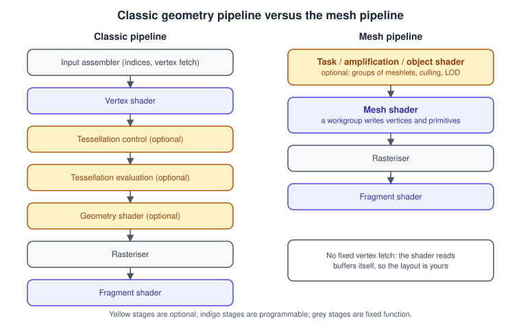
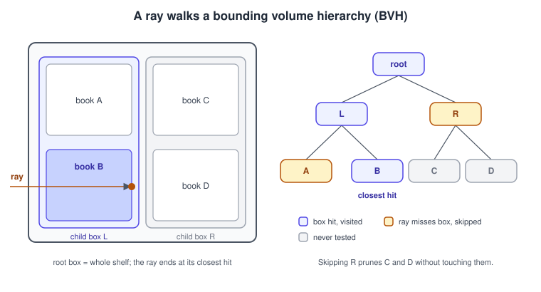
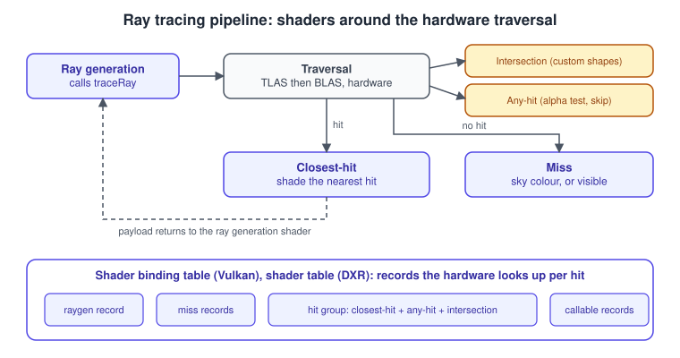

Advanced Pipeline Stages
|
This content was generated with the assistance of AI and should be verified against the official documentation before being relied on in production. |
The classic pipeline described in The Rendering Pipeline has a vertex shader, a rasteriser and a fragment shader. Over two decades GPUs gained optional stages around that core: tessellation to add geometry on the fly, geometry shaders to create or destroy primitives, compute shaders to run general work, mesh and task shaders to replace the fixed vertex fetch, and ray tracing to query the scene directly. This page explains what each stage does, why it exists, how to use it, and which APIs expose it.
The facts were checked in November 2026. The versions documented are OpenGL 4.6, Vulkan 1.4 (with the extensions named below), Metal as shipped with the current Apple operating systems, WebGPU as described by the W3C Candidate Recommendation Draft of 2026-09-15, and Direct3D 12 for context only. Hardware support is uneven: tessellation, mesh shaders and ray tracing are optional features that you must query at run time. The examples use the running Bookshelf scene: a shelf of box meshes holding textured books, which is a convenient scene for culling, tessellated cover curvature and shadow rays.
Which API offers which stage
Read the table as "can I count on it in a shipping product": a plain "yes" means a core or widely deployed feature, "optional" means the API exposes it behind a feature flag or extension, and "no" means the API has no such stage.
| Stage | OpenGL | WebGL 2 | Vulkan | Metal | WebGPU | Direct3D 12 |
|---|---|---|---|---|---|---|
Tessellation |
yes, 4.0 |
no |
optional feature |
yes, via patches |
no |
yes, hull and domain |
Geometry shader |
yes, 3.2 |
no |
optional feature |
no |
no |
yes |
Compute shader |
yes, 4.3 (ES 3.1) |
no |
core |
core |
core |
core |
Mesh and task shaders |
vendor extension only |
no |
optional, |
yes, Metal 3 and later |
no |
yes, shader model 6.5 and later |
Ray tracing pipeline |
no |
no |
optional, |
yes, intersection functions |
no |
yes, DXR 1.0 and later |
Ray queries (inline) |
no |
no |
optional, |
yes, the intersector API |
no |
yes, DXR 1.1 |
WebGL 2 is based on OpenGL ES 3.0, which has only vertex and fragment stages; a compute extension for WebGL was proposed and abandoned in favour of WebGPU, so the web gets compute shaders only through WebGPU. Geometry and tessellation shaders are not part of WebGPU or WGSL, and mesh and ray-tracing features for the web remain proposals rather than specification text.
Tessellation
Tessellation lets the GPU subdivide a coarse patch into many triangles, so a model can be stored at low resolution and refined where the camera is close. It is useful for displacement-mapped terrain, smooth silhouettes on curved surfaces and level of detail that adapts per patch without storing several meshes.

How it works
Tessellation adds three steps between the vertex shader and the rasteriser:
-
A control stage (OpenGL and Vulkan: tessellation control shader; Direct3D: hull shader) runs once per control point of the patch. It may transform the control points and, for each patch, writes the tessellation levels: how many segments each outer edge gets and how many divisions the interior gets.
-
The tessellator is fixed function. It reads the levels and generates a pattern of barycentric (for triangle patches) or normalised \((u, v)\) (for quads and isolines) coordinates. You choose the domain (triangles, quads or isolines), the spacing (equal, fractional odd or fractional even) and the winding. Fractional spacing lets the level change smoothly over time, which avoids visible popping when the level follows camera distance.
-
An evaluation stage (OpenGL and Vulkan: tessellation evaluation shader; Direct3D: domain shader) runs once per generated vertex. It receives the tessellation coordinate and the patch control points, interpolates them, optionally displaces the result, and outputs the clip-space position.
In OpenGL and Vulkan the patch size is declared with layout(vertices = N) out; in the control shader and set from the application with glPatchParameteri(GL_PATCH_VERTICES, N) or in the Vulkan pipeline’s tessellation state. The draw call uses the patch primitive topology instead of triangles. Direct3D’s hull shader additionally has a patch-constant function that computes the levels. Metal has no programmable control stage: you run a compute kernel that writes tessellation factors into a buffer, then draw patches with a post-tessellation vertex function that plays the role of the evaluation stage.
The options that matter
-
Domain: triangles, quads or isolines (for hair and curves).
-
Spacing: equal spacing rounds the level up to an integer, fractional odd and even keep the pattern continuous when the level changes.
-
Winding and point mode: control the orientation of generated triangles, or emit points for debugging.
-
Levels: the outer levels must agree on both sides of a shared edge, otherwise cracks appear. The usual rule is to compute each edge level only from that edge’s two end points, for example from the distance of the edge midpoint to the camera, so neighbouring patches compute the same value.
-
Limits: the maximum tessellation level is at least 64 and the maximum patch size at least 32 in OpenGL and Vulkan; check the device limits rather than assuming more.
Example: distance-adaptive tessellation of a book cover
The control shader below sets the level of each edge from the distance of the edge midpoint to the eye. The evaluation shader interpolates the three control points and applies the model-view-projection matrix.
// book.tesc
#version 460 core
layout(vertices = 3) out;
in vec3 vPos[]; // from the vertex shader (object space)
out vec3 tcPos[];
uniform vec3 uEye; // object-space eye position
uniform float uMaxLevel; // for example 16.0
float levelForEdge(vec3 a, vec3 b)
{
float d = distance(uEye, 0.5 * (a + b));
return clamp(uMaxLevel / (1.0 + d), 1.0, uMaxLevel);
}
void main()
{
tcPos[gl_InvocationID] = vPos[gl_InvocationID];
if (gl_InvocationID == 0) {
float e0 = levelForEdge(vPos[1], vPos[2]);
float e1 = levelForEdge(vPos[2], vPos[0]);
float e2 = levelForEdge(vPos[0], vPos[1]);
gl_TessLevelOuter[0] = e0;
gl_TessLevelOuter[1] = e1;
gl_TessLevelOuter[2] = e2;
gl_TessLevelInner[0] = max(e0, max(e1, e2));
}
}
// book.tese
#version 460 core
layout(triangles, fractional_odd_spacing, ccw) in;
in vec3 tcPos[];
uniform mat4 uMVP;
void main()
{
vec3 p = gl_TessCoord.x * tcPos[0]
+ gl_TessCoord.y * tcPos[1]
+ gl_TessCoord.z * tcPos[2];
gl_Position = uMVP * vec4(p, 1.0);
}Source: OpenGL 4 reference: gl_TessLevelOuter and glPatchParameter.
The same two shaders compile for Vulkan through glslang with a #version 460 header and layout(location = N) qualifiers on the inputs and outputs. In Vulkan the tessellationShader device feature must be enabled when the device is created, and the pipeline must use VK_PRIMITIVE_TOPOLOGY_PATCH_LIST. See the tessellation chapter at Vulkan specification: Tessellation.
Common mistakes and performance
-
Setting a high level everywhere. The cost is the number of generated vertices, so tessellation only pays off where the base mesh is clearly too coarse. Many titles cap the level at about 16 and fade it out with distance.
-
Cracks between patches because outer levels were computed from the patch centre instead of the shared edge.
-
Forgetting that displaced vertices need recomputed normals; sample a height map neighbourhood in the evaluation stage or use a normal map.
-
Relying on tessellation for portability. Metal needs a different structure, WebGPU and WebGL have none, and mobile GPUs often execute it slowly. Mesh shaders and compute-based LOD are increasingly preferred on desktop for the same purpose.
Geometry shaders and why to avoid them
A geometry shader runs after the vertex stage (or after tessellation) once per primitive, sees all the vertices of that primitive, and can emit zero, one or several output primitives, possibly of a different topology. It arrived in Direct3D 10 and OpenGL 3.2. Typical uses were point sprites expanded to quads, shadow volume extrusion, rendering to several cube-map faces or layers in one pass, and wireframe overlays.
Their amplification model is the problem. Because the output size is variable and ordered, hardware must reserve buffer space for the worst case and keep the output in primitive order, which limits parallelism; on many GPUs a geometry shader that emits more than a few vertices is slower than doing the same work in the vertex shader plus instancing. Apple GPUs and Metal have no geometry stage at all, WebGPU has none either, and MoltenVK cannot translate it, so geometry shaders reduce portability. Vulkan keeps it as an optional geometryShader feature.
The recommended replacements are:
-
Instancing and the vertex shader for billboards: draw one instance per sprite and expand the corner in the vertex shader from
gl_VertexID. -
Layered rendering with
gl_Layerorgl_ViewportIndexwritten from the vertex shader, which Vulkan 1.2 exposes without a geometry stage throughVK_EXT_shader_viewport_index_layer, and multiview for stereo rendering. -
Compute shaders writing an indirect draw buffer, or mesh shaders, when the geometry really needs to be generated.
In OpenGL a geometry shader declares layout(triangles) in; and layout(triangle_strip, max_vertices = 3) out; and calls EmitVertex() and EndPrimitive(). See OpenGL 4 reference: EmitVertex.
Compute shaders
A compute shader is not part of the graphics pipeline at all: it is a separate program that runs on the same hardware, reads and writes buffers and images, and has no vertices, rasteriser or render targets. It makes the GPU a general parallel processor, and modern renderers use it for culling, skinning, particle simulation, light culling, post-processing, image filtering and many other tasks that used to be forced into fragment shaders.
Execution model
Work is organised in a grid of workgroups (Direct3D and Metal: thread groups or threadgroups). Each workgroup contains a fixed number of invocations, declared in the shader (local_size_x in GLSL, @workgroup_size in WGSL, the threadgroup size in Metal, numthreads in HLSL). The invocations of one workgroup run together on one compute unit, can synchronise with a barrier, and can share fast on-chip workgroup memory (shared in GLSL, var<workgroup> in WGSL, threadgroup in MSL). Different workgroups cannot synchronise inside one dispatch, and their execution order is undefined.
Each invocation has built-in indices: the local index within the workgroup, the workgroup index and the global invocation index, which is simply workgroup index times workgroup size plus local index. The host launches the work with a dispatch call that gives the number of workgroups in three dimensions: glDispatchCompute, vkCmdDispatch, a Metal dispatchThreadgroups call, or dispatchWorkgroups in WebGPU. A workgroup size that is a multiple of the hardware’s wave or warp width (32 or 64 on desktop GPUs, 32 on Apple GPUs) avoids idle lanes; 64 is a common portable choice for one-dimensional work, and 8 by 8 for images.
Example: culling the books of the shelf in WebGPU
The Bookshelf has many instanced books. A compute pass can test each book’s bounding sphere against the six frustum planes and write a visibility flag, which a later pass turns into an indirect draw. The WGSL below does the test; the JavaScript creates the pipeline and dispatches it.
struct Book {
center : vec3f,
radius : f32,
};
@group(0) @binding(0) var<storage, read> books : array<Book>;
@group(0) @binding(1) var<storage, read_write> visible : array<u32>;
@group(0) @binding(2) var<uniform> planes : array<vec4f, 6>;
@compute @workgroup_size(64)
fn main(@builtin(global_invocation_id) id : vec3u) {
let i = id.x;
if (i >= arrayLength(&books)) {
return;
}
var inside = 1u;
for (var p = 0u; p < 6u; p++) {
let d = dot(planes[p].xyz, books[i].center) + planes[p].w;
if (d < -books[i].radius) {
inside = 0u;
}
}
visible[i] = inside;
}const module = device.createShaderModule({ code: cullWgsl });
const pipeline = device.createComputePipeline({
layout: 'auto',
compute: { module, entryPoint: 'main' },
});
const bindGroup = device.createBindGroup({
layout: pipeline.getBindGroupLayout(0),
entries: [
{ binding: 0, resource: { buffer: bookBuffer } },
{ binding: 1, resource: { buffer: visibleBuffer } },
{ binding: 2, resource: { buffer: planeBuffer } },
],
});
const encoder = device.createCommandEncoder();
const pass = encoder.beginComputePass();
pass.setPipeline(pipeline);
pass.setBindGroup(0, bindGroup);
pass.dispatchWorkgroups(Math.ceil(bookCount / 64));
pass.end();
device.queue.submit([encoder.finish()]);Compute in the other APIs
-
OpenGL 4.3 (and OpenGL ES 3.1) added compute shaders and shader storage buffers; launch with
glDispatchComputeand make results visible withglMemoryBarrier. See OpenGL 4 reference: glDispatchCompute. -
Vulkan has compute pipelines in the core; compute can run on a dedicated or asynchronous queue family so that it overlaps graphics.
-
Metal compute pipelines are as central as render pipelines and are required for tessellation factors; Apple GPUs also support tile shaders in the render pass.
-
WebGL has no compute.
Pitfalls
-
Missing bounds checks when the element count is not a multiple of the workgroup size, as in the bounds check on the array length above.
-
Reading data another workgroup wrote in the same dispatch: there is no inter-workgroup ordering; use a second dispatch or an atomic counter pattern.
-
Forgetting memory barriers or pipeline barriers between a compute pass and the draw that consumes its output (OpenGL
glMemoryBarrier, Vulkan pipeline barriers, automatic in WebGPU). -
Bank conflicts and divergent branches in workgroup memory code; profile before tuning.
Mesh and task shaders
Mesh shaders replace the whole front of the classic pipeline, from vertex fetch through geometry, with a compute-like model. A mesh shader is launched as a workgroup that produces a small batch of vertices and primitives (a meshlet) directly: it reads whatever buffers it wants, writes the output vertices and the index triples of its triangles, and hands them to the rasteriser. An optional task shader (Direct3D: amplification shader, Metal: object shader) runs before it, decides how many mesh workgroups to launch and can cull whole groups of meshlets, pass payload data to them, or select a level of detail.

Why they exist
The input assembler is a fixed unit with a fixed path: indices, vertex buffers and a vertex cache. Large scenes with millions of triangles overload it, and the vertex shader cannot discard a triangle before its vertices are shaded. Mesh shading moves the work to the programmable cores. A model is pre-split offline into meshlets, typically up to 64 vertices and about 124 to 126 triangles, each with a bounding sphere and a normal cone. A task shader tests those bounds against the frustum, occlusion and backfacing so that culled meshlets are never fetched, shaded or rasterised. Compared with a compute culling pass followed by indirect draws, the data stays on chip and no intermediate buffer is written.
Availability
Mesh shaders appeared in Direct3D 12 (shader model 6.5, with DirectX 12 Ultimate in 2020), as an NVIDIA extension for OpenGL and Vulkan, and as the cross-vendor VK_EXT_mesh_shader extension, published in 2022. Metal added object and mesh stages in Metal 3 (2022). WebGPU has no mesh shader stage. The Vulkan feature is optional and queried through VkPhysicalDeviceMeshShaderFeaturesEXT; a mesh pipeline replaces the vertex and geometry stages and cannot be combined with them in one pipeline.
Example: a book cover quad from a mesh shader
The shader below is the smallest useful mesh shader. One workgroup of four invocations writes the four corners of a book cover quad and its two triangles. A real renderer would instead read a meshlet from a storage buffer.
#version 460
#extension GL_EXT_mesh_shader : require
layout(local_size_x = 4) in;
layout(triangles, max_vertices = 4, max_primitives = 2) out;
layout(location = 0) out vec2 vUV[];
layout(push_constant) uniform Push {
mat4 mvp;
} pc;
void main()
{
SetMeshOutputsEXT(4, 2);
uint i = gl_LocalInvocationIndex;
vec2 corner = vec2(float(i & 1u), float(i >> 1u));
gl_MeshVerticesEXT[i].gl_Position =
pc.mvp * vec4(corner.x * 0.15 - 0.075, corner.y * 0.22 - 0.11, 0.0, 1.0);
vUV[i] = corner;
if (i == 0u) {
gl_PrimitiveTriangleIndicesEXT[0] = uvec3(0, 1, 2);
gl_PrimitiveTriangleIndicesEXT[1] = uvec3(2, 1, 3);
}
}On the host, record vkCmdDrawMeshTasksEXT(commandBuffer, 1, 1, 1) instead of a normal draw. There are no vertex buffers and no input assembly state.
Source: GLSL_EXT_mesh_shader and Vulkan: VK_EXT_mesh_shader. For Direct3D and Metal see the DirectX mesh shader specification and MTLMeshRenderPipelineDescriptor.
Common mistakes and performance
-
Exceeding the declared
max_verticesormax_primitives: the limits are per workgroup, and the device caps (for example the maximum output vertices) differ by vendor. -
Making meshlets too small, which wastes lanes, or too large, which limits culling granularity and occupancy. Start from 64 vertices and 124 triangles and measure.
-
Treating mesh shaders as a universal win. On hardware without dedicated support they can be slower than the classic path for simple meshes, and the classic path still gives the vertex cache for free. Ship both when the target range is wide.
-
Skipping the offline meshlet builder: tools such as meshoptimizer generate meshlets and bounds.
Ray tracing
Rasterisation projects triangles onto the screen and cannot easily answer questions about the rest of the scene, such as "is this point in shadow?" or "what does the mirror reflect?". Ray tracing answers them by shooting rays through a spatial index of the scene and finding the closest intersection. GPUs gained dedicated ray-intersection units around 2018 (the first Direct3D Raytracing, DXR, release), and the cross-vendor Vulkan extensions VK_KHR_acceleration_structure, VK_KHR_ray_tracing_pipeline and VK_KHR_ray_query were finalised in November 2020. Metal added ray tracing in 2020 as well. WebGPU and OpenGL have no standard ray-tracing support.
Acceleration structures and the BVH
Testing a ray against every triangle is hopeless, so geometry is organised into a bounding volume hierarchy (BVH): a tree whose nodes are bounding boxes, whose leaves hold triangles or other primitives and whose parent boxes enclose their children. A ray tests the root box, and descends only into the child boxes that it hits, skipping whole subtrees whose box it misses. Traversal on average touches a handful of nodes instead of millions of triangles.

The API hides the exact tree format, which differs between vendors. You build two kinds of acceleration structure:
-
A bottom-level acceleration structure (BLAS) holds geometry: triangle vertex and index buffers, or procedural axis-aligned boxes. In the Bookshelf, all nine books share one BLAS because they share one mesh.
-
A top-level acceleration structure (TLAS) holds instances of BLASes, each with its own transform, mask and shader-binding offset. Moving a book only updates its instance transform in the TLAS.
Builds run on the GPU. Static geometry is built once and often compacted to save memory; animated geometry is refitted (updated in place) or rebuilt each frame, which is much cheaper than a full build but degrades quality over time. Update flags and memory budgets are part of the build call.
The ray tracing pipeline
In the pipeline model a ray-generation shader launches rays and the hardware performs the traversal. Depending on what it finds, it invokes other shader stages.

-
Ray generation: one invocation per pixel or per sample. It builds the ray (origin, direction, minimum and maximum distance) and calls
traceRayEXT(GLSL) orTraceRay(HLSL), which does not return until the rest of the pipeline has run. It then writes the result. -
Intersection: optional, for procedural primitives such as spheres or voxels; triangles use a built-in test.
-
Any-hit: runs for every candidate hit along the ray. Use it for alpha-tested geometry, to ignore a hit, or to accumulate transparent hits. It is expensive, so mark opaque geometry as opaque and skip the stage.
-
Closest-hit: runs once for the nearest accepted hit. Shade the surface there, and possibly shoot secondary rays.
-
Miss: runs when nothing is hit; it returns a sky colour, or "visible" for a shadow ray.
-
Callable: a shader invoked by other shaders, useful for material functions.
Shaders communicate through a payload declared with rayPayloadEXT and received with rayPayloadInEXT. The shader binding table (SBT in Vulkan; shader table in DXR) tells the hardware which shader records to run for each ray type, instance and geometry: a hit group is a closest-hit plus optional any-hit and intersection shader. Recursion is limited by the device (maxRayRecursionDepth), and shooting rays from the closest-hit shader recursively is usually replaced by an iterative loop in the ray-generation shader.
Example: a shadow ray towards the desk lamp
The ray-generation shader below shoots one ray from the surface to the lamp. Because it only wants to know whether anything blocks the ray, it asks the hardware to stop at the first hit and to skip the closest-hit shader, and the miss shader marks the point as lit.
// shadow.rgen
#version 460
#extension GL_EXT_ray_tracing : require
layout(set = 0, binding = 0) uniform accelerationStructureEXT tlas;
layout(set = 0, binding = 1, r8) uniform image2D shadowMask;
layout(set = 0, binding = 2, rgba32f) uniform readonly image2D worldPosition;
layout(push_constant) uniform Push { vec3 lampPos; } pc;
layout(location = 0) rayPayloadEXT float lit;
void main()
{
ivec2 px = ivec2(gl_LaunchIDEXT.xy);
vec3 origin = imageLoad(worldPosition, px).xyz;
vec3 toLamp = pc.lampPos - origin;
float dist = length(toLamp);
lit = 0.0;
traceRayEXT(tlas,
gl_RayFlagsTerminateOnFirstHitEXT | gl_RayFlagsSkipClosestHitShaderEXT,
0xFF, // cull mask
0, 0, // SBT record offset and stride
0, // miss shader index
origin, 0.001, toLamp / dist, dist,
0); // payload location
imageStore(shadowMask, px, vec4(lit));
}
// shadow.rmiss
#version 460
#extension GL_EXT_ray_tracing : require
layout(location = 0) rayPayloadInEXT float lit;
void main() { lit = 1.0; }Source: GLSL_EXT_ray_tracing and Vulkan Guide: Ray tracing.
Ray queries
Ray queries (VK_KHR_ray_query and GLSL_EXT_ray_query, DXR 1.1 RayQuery, Metal’s intersector) let any shader stage, including fragment and compute shaders, trace a ray inline, without a separate pipeline and shader binding table. You initialise a query, loop on rayQueryProceedEXT, and read the committed result yourself. Inline queries suit a single occlusion or shadow ray inside an existing raster or compute pass; the pipeline model suits many material types and recursive effects because each hit group is a separate shader that the hardware schedules and sorts.
#version 460
#extension GL_EXT_ray_query : require
layout(set = 0, binding = 0) uniform accelerationStructureEXT tlas;
float shadowFactor(vec3 worldPos, vec3 normal, vec3 lampPos)
{
vec3 toLamp = lampPos - worldPos;
float dist = length(toLamp);
rayQueryEXT rq;
rayQueryInitializeEXT(rq, tlas,
gl_RayFlagsTerminateOnFirstHitEXT | gl_RayFlagsOpaqueEXT,
0xFF, worldPos + normal * 0.001, 0.001, toLamp / dist, dist);
while (rayQueryProceedEXT(rq)) { }
return rayQueryGetIntersectionTypeEXT(rq, true) == gl_RayQueryCommittedIntersectionNoneEXT
? 1.0 : 0.0;
}Source: GLSL_EXT_ray_query. For Direct3D, see the DXR functional specification, and for Metal MTLAccelerationStructure.
Performance and mistakes
-
Ray tracing is bandwidth- and divergence-limited. Shoot few, coherent rays: one shadow ray or one reflection ray per pixel, then denoise, rather than hundreds of random rays.
-
Mark geometry opaque whenever possible so that the any-hit stage is skipped.
-
Use the cull mask and instance flags to exclude geometry from classes of rays.
-
Avoid per-frame full rebuilds of large static BLASes; refit only the animated ones.
-
Self-intersection: start rays slightly off the surface (the minimum distance of 0.001 above, or an offset along the normal).
-
Treat ray tracing as an optional quality tier. Many devices lack it, so keep a rasterised path, for example shadow maps from the classic pipeline, as the fallback.
What the older books say, and what changed
The books used by this section predate nearly all of these stages. Daniel Selman’s Java 3D Programming and the Java 3D API Specification describe a fixed-function scene-graph API: Java 3D 1.2 and 1.3 have no programmable shaders at all, let alone tessellation, compute or ray tracing, and the geometry compression of the specification’s appendix has been superseded by glTF with Draco or meshoptimizer compression. The OpenGL SuperBible and the OpenGL ES 3.0 Programming Guide cover the vertex and fragment stages thoroughly; OpenGL ES 3.0 has only those two stages, so tessellation, geometry shaders and compute (ES 3.1 and later, and OpenGL 4.x) need the current Khronos documentation. For the Java platform the maintained path is JogAmp’s Java 3D 1.7.2 on JOGL 2.6 and, for new work, LWJGL.
| Older idea | Today |
|---|---|
Fixed-function geometry pipeline, no shaders (Java 3D 1.3) |
Programmable stages, with optional tessellation, mesh and ray tracing |
Geometry shader to generate primitives |
Instancing, compute culling and mesh shaders; Metal and WebGPU have no geometry stage |
Fragment-only GPGPU tricks |
Compute shaders in OpenGL 4.3, Vulkan, Metal and WebGPU |
Shadows only by shadow maps or volumes |
Shadow maps remain the baseline, with ray-traced shadows as an optional tier |
See also
The Rendering Pipeline describes the core stages these build on, and Explicit vs Implicit APIs explains how the pipeline objects, barriers and queues that these stages rely on are expressed in modern APIs.
See it in
OpenGL: Geometry and Tessellation Shaders and Mesh Shaders in OpenGL (GL_EXT_mesh_shader); WebGL: WebGL 2 Advanced Features; Metal: Tessellation in Metal, Mesh Shaders and Ray Tracing in Metal; Vulkan: Tessellation and Geometry Shaders in Vulkan, Mesh and Task Shaders and Ray Tracing in Vulkan; Unreal Engine: Nanite and Virtual Geometry.
References
-
Khronos, OpenGL 4 reference pages: gl_TessLevelOuter, glPatchParameter, EmitVertex, glDispatchCompute
-
Khronos, Vulkan specification and Vulkan Guide: Ray tracing
-
Khronos, VK_EXT_mesh_shader, GLSL_EXT_mesh_shader, GLSL_EXT_ray_tracing, GLSL_EXT_ray_query
-
Apple, Metal and MTLMeshRenderPipelineDescriptor, MTLAccelerationStructure
-
Microsoft (context only), mesh shader specification and DirectX Raytracing specification
-
Manning, Java 3D Programming (Daniel Selman, 2002) and the JogAmp Java 3D project